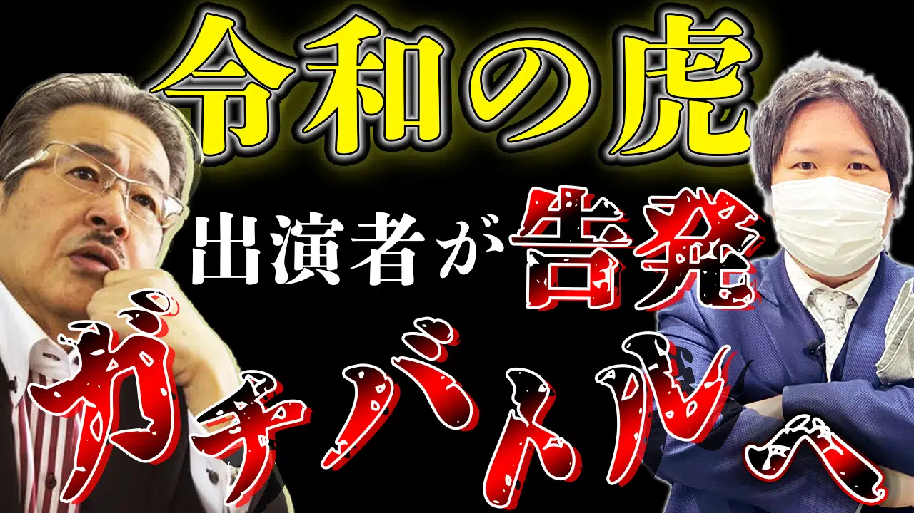
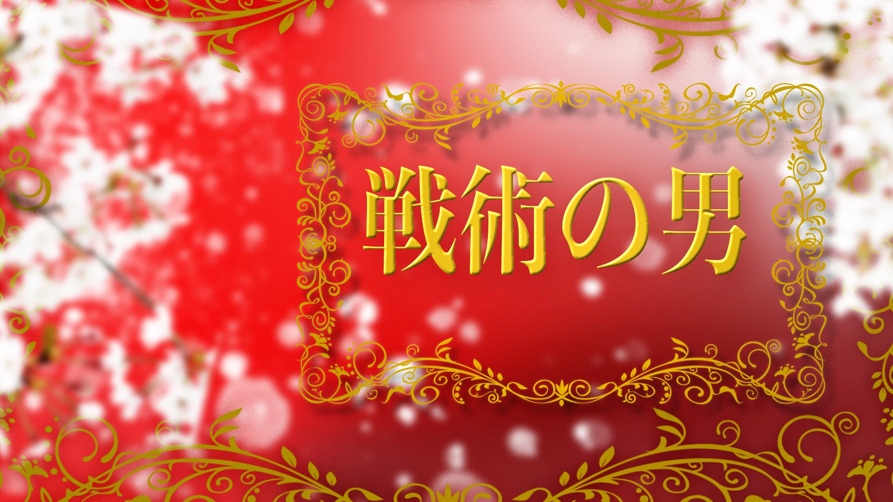

Graphic / グラフィック作品
サムネイル制作
この作品は私が仕事を受けている作品です
イメージは嘘をついている事を強調し動画全体の内容をサムネイルだけでわかりやすくいたしました
この作品は実際にYoutubeに上がっているサムネイルです
イメージは柔らかい感じでの要望がありましたので、水色や青などといった色を採用し作成いたしました2日で再生数8.3万再生です。クリック率は9%を超えております！ 制作時間は30分です

この作品は実際にYoutubeに上がっているサムネイルです
イメージはスマブラのパロディーな感じでとの要望がありましたので、スマブラに似せたデザインとレイアウトを作成いたしました。再生数は15万再生です。クリック率は9%を超えておりとても良い数字です 制作時間は30分です
この作品は実際にYoutubeに上がっているサムネイルです
イメージは恐怖感を煽る感じでとの要望がありましたので、凸凹している壁のグラフィックを製作しギザギザしているフォントに赤と黒のグラデーションを組み合わせることにより恐怖感を生まれさせました再生数は6.6万再生です。クリック率は8%を超えておりとても良い数字です 制作時間は40分です
この作品は実際にYoutubeに上がっているサムネイルです
こちらは動画の内容を簡潔に表現してほしい要望がありましたので、動画のシーンで大事な文面を取り入れ文字を強調するように大きくし強調する色を使用し作成いたしました。再生数は10万再生です。クリック率は9%を超えておりとても良い数字です 制作時間は20分です
この作品は実際にYoutubeに上がっているサムネイルです
こちらは動画の内容を簡潔に表してほしい要望がありましたので、動画で一番インパクトのある言葉を使用し文字を強調するように分かりやすく何を行ったのかを記入し作成いたしました。再生数は12万再生です。クリック率は9%を超えておりとても良い数字です 制作時間は30分です
グラフィック制作

- 
動画制作
この作品は動画制作の授業で制作いたしました。
映画 帝一の国を参考に制作いたしました。細かな調整や影など駆使しクオリティの高いシーンを制作することが出来ました。
この作品は依頼を受け作成いたしました。
怪盗とペルソナ（アニメ）をイメージして制作してほしいと要望を受けました。イラストを発注し、イメージの沿った壁のデザインやスポットライトグラフィックを作成し、イラストに影や色合いを調整させることにより依頼主のイメージの沿った作品を仕上げることが出来ました。